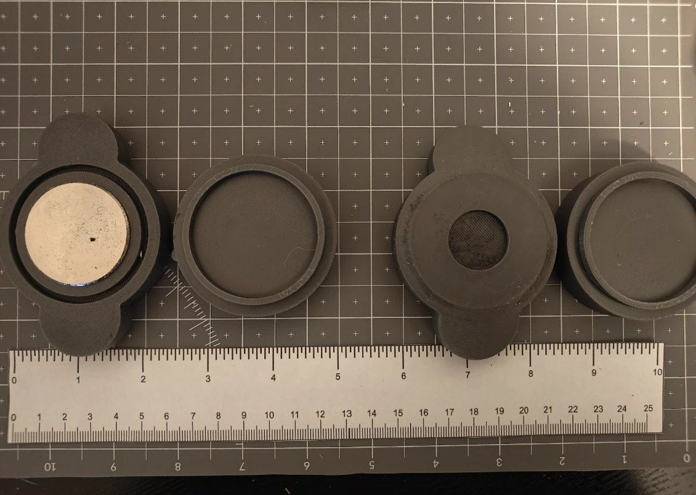
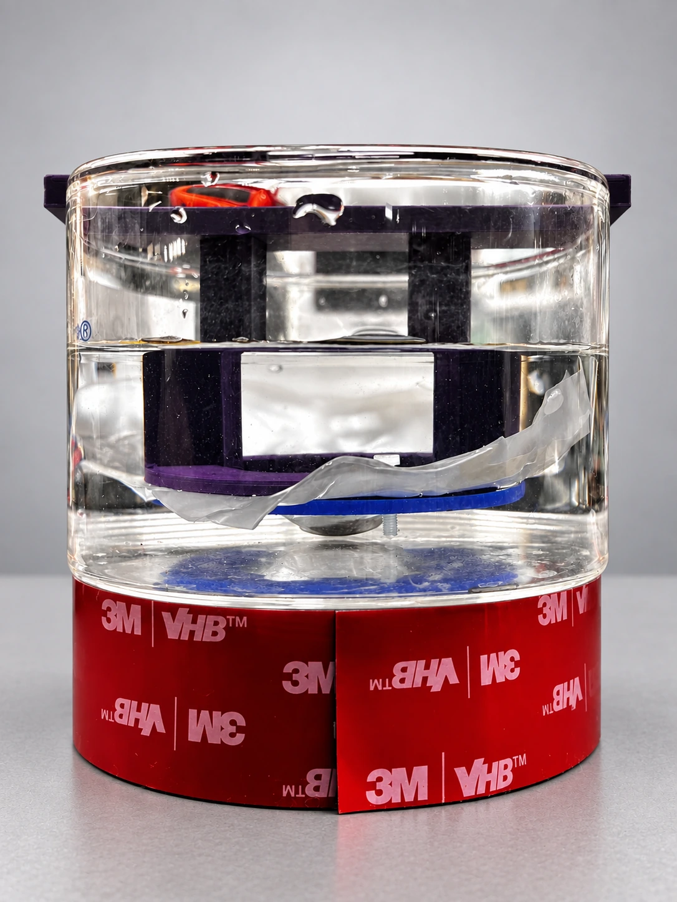
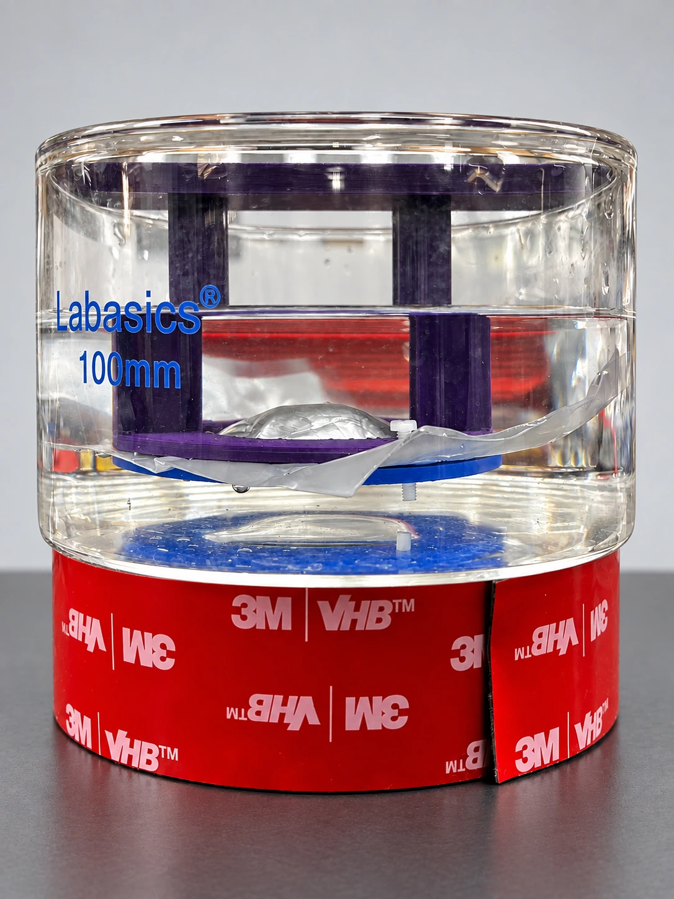
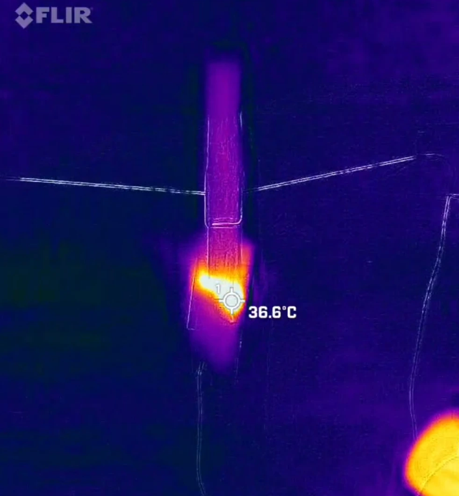
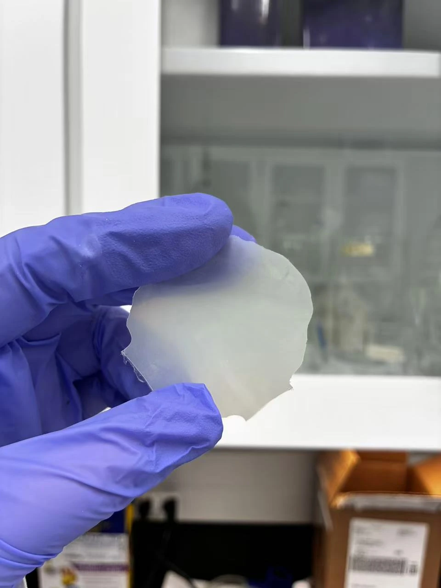

Soft materials / Haptics
Haptic Surface
Thermally tunable structures for tactile feedback.
Combining a thermally softened polymer structure with magnetic loading to develop shape-changing tactile interfaces.
- Context
- Carnegie Mellon · Soft Machines Lab
- Period
- 2025–present
- My contribution
- Project lead · materials, experiments & mechanics
Evaluation at a glance
Water-bath trials demonstrated attraction and repulsion. Current work combines crosslinked PCL with photothermal heating; coupled heating-and-deformation testing is the next step.
Introduction
Turn material response into tactile feedback.
Shape-changing surfaces could communicate information through touch, supporting interfaces that do more than display visual cues. Haptic Surface explores this function with a soft unit cell: temperature adjusts the compliance of polycaprolactone (PCL), while a magnetic field loads an embedded neodymium–iron–boron (NdFeB) particle and silicone composite.
The objective is a reproducible connection between thermal state, magnetic loading and surface deformation. I lead this project, spanning material selection, structural design, experimental planning and prototype development.


Design & methods
Design the material, fixture and experiment together.
I design and fabricate samples and fixtures, plan thermal and magnetic experiments, and develop mechanics models linking temperature-dependent stiffness to deformation. After exploring electrical and photothermal heating, I selected crosslinked PCL with polydopamine (PDA) photothermal heating as the current development route.
Water-bath experiments provide a thermal baseline for studying attraction and repulsion. Separating thermal conditioning from magnetic actuation helps identify which physical effect drives a change in the sample.


Evaluation
Use a working baseline to guide the next prototype.
Initial water-bath trials demonstrated attraction and repulsion of the soft structure. Separate heating studies and newer film samples support development of the crosslinked-PCL/PDA route. The thermal image records a heating trial on a prototype.
The unit-cell experiments establish the thermal and magnetic behaviors separately. The next evaluation will combine PDA heating with magnetic loading and measure displacement, force, heating and cooling response, and repeatability under defined conditions.


Conclusion
A testable path from materials to an interface.
The project has produced physical prototypes and a controlled thermal–magnetic testing approach. The current design task is to integrate the selected photothermal route with predictable deformation. Separating the coupled physical effects into controlled experiments provides a basis for that integration.
Image credits & project sources
Prototype and experiment images: Zongyu Gao, Haptic Surface research.